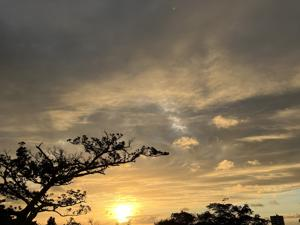
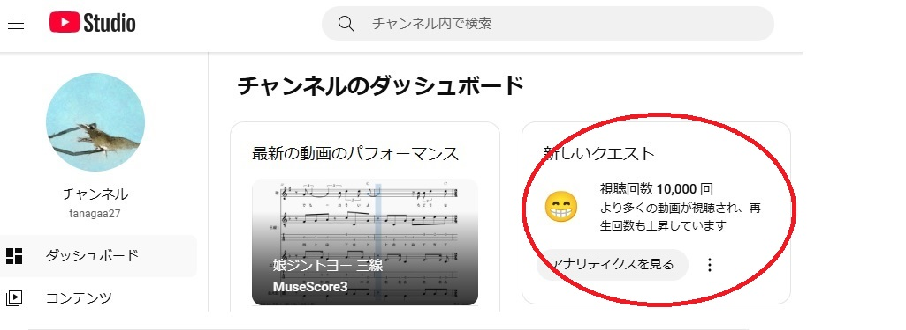
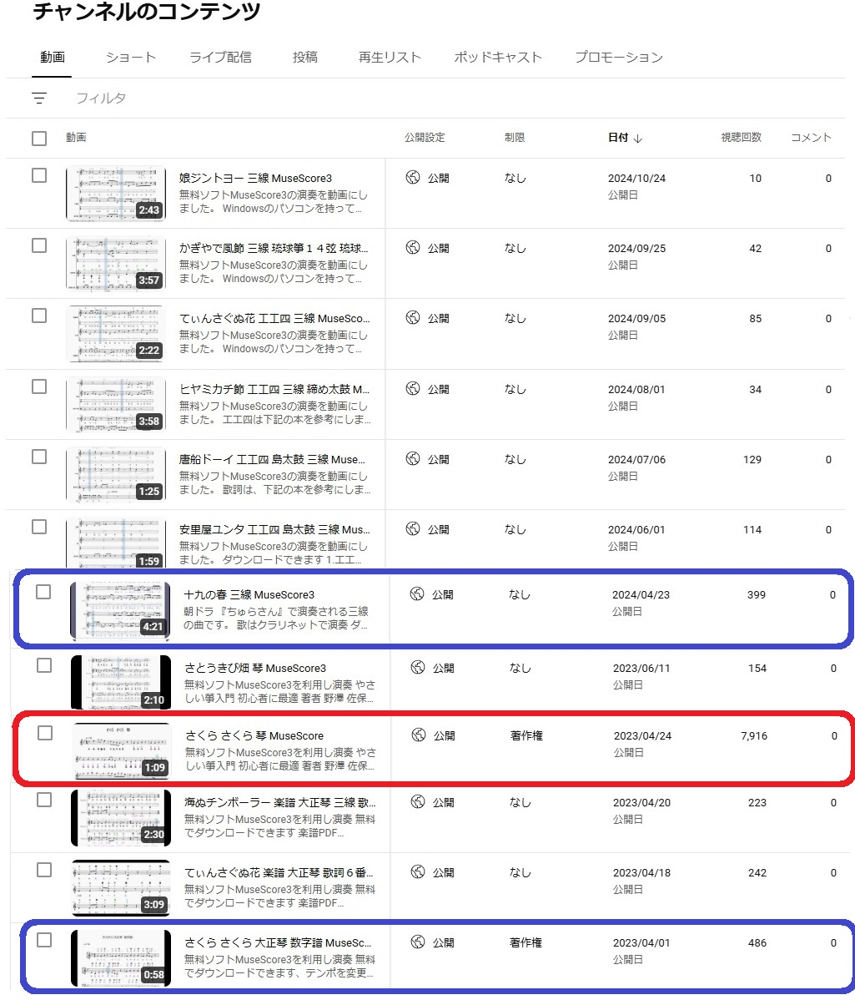

うるがいの話 ある日
最新: 視聴回数１万回【うるがいの話 ある日】とは 一日だけのプログです
『うるがいの話』の最新一日だけのプログで、通信料が少なく経済的だ。カニの画像をクリックすると全ての日付が載る『うるがいの話』サイトを表示します
|
|
【うるがいの話】 うるがい(ｳﾙｶﾞｲ urugai)とは、『もずくがに』の名前でとても大きくなります。 |
|---|---|
|
|
【カミマヤーの話】 猫のことを方言でマヤーといいます。カミマヤー（kamimayaa）とは、神の猫のことです。 |
|
【たながぁの音楽】 たながぁ（ﾀﾅｶﾞｰ tanagaa）とは手長えびのことで、何種類かあり大きいのは車 エビぐらいになります。 |

|
【ぶながぁの話】 ぶながぁ(ﾌﾞﾅｶﾞｰ bunagaa)とは、赤い髪の毛、赤い身体、そして身長は１ｍ２０ｃｍ ぐらい、川の蟹を食べているの目撃された。場所は沖縄県国頭郡大宜味村のと ある村僕の隣近所に住んでいる爺さんから、聞いた話です。 |
|
|
【ギーマの話】 ギーマ(giima)とは、山原の里山に咲くスズランに似た、 花を付けます。実は食べられます、 気が付くと口の周りが紫になっています。 |
2024年10月29日 (火）視聴回数１万回
15:14

小乗（古典）向けに作ったチャンネルの視聴回数が、１万回を超えた。

ほとんどが、『さくら さくら 箏（７，９１６回）だが。楽器のラン
クから箏、大正琴、三線の順番である。三線は、やはりローカルなので
しょう。しかし、なぜ『さくら さくら 箏』が人気があるのか、解ら
ん、なぜ著作権に引っかかるのかも。

大乗（なんでもあり）向けに作ったチャンネルの視聴回数も、この前５
千回を超えたとメッセージが来ていた。マ、見てないよりはマシである
。
昨日と変わって朝から、雨、今日もお義母さんを見舞いくと行っていた
ヨメは疲れと天気でパス。昨日は、お義母さんの姉妹兄弟の末っ子９０
才と施設で面会させたが、お義母さんは、体を起こせず寝たままだった
とのこと。小母さんを３０分程の距離にある家に車で送って行ったが、
また面会に来たいと言っていた。ヨメと私は、それはないと思った。
本日のバタフライピーの花、１３収穫。
１５時０２分 ビットコインの総資産 ￥３１、４６８（↑１、０６０！）